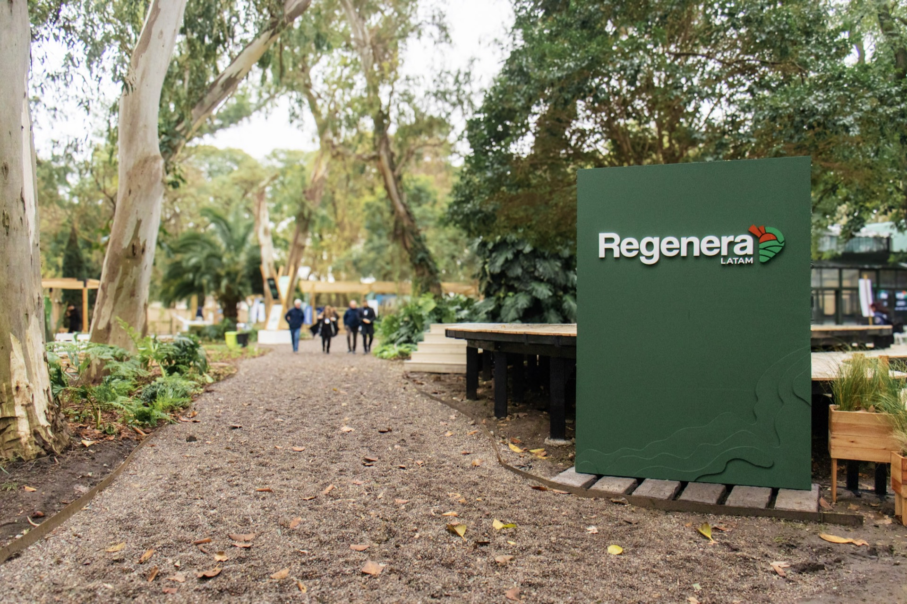

Educación
Capacitamos a los campos y a la sociedad civil en el paradigma y las prácticas regenerativas.
Soñamos la producción regenerativa como un cambio real y permanente. Para lograrlo, construimos la dimensión social que la sustenta: educación, divulgación y trazabilidad.

Trabajamos en tres frentes para que el cambio no dependa solo de la técnica, sino de las personas y comunidades que lo hacen posible.
Capacitamos a los campos y a la sociedad civil en el paradigma y las prácticas regenerativas.
Generamos instancias de conexión entre el campo y la ciudad, el productor regenerativo y el convencional, el sector privado y las instituciones.
Medimos el impacto social de los campos, tranqueras adentro y tranqueras afuera.

De la escuela rural al encuentro regional: cada programa construye la capa social desde un lugar distinto.
 Educación
Educación
El programa educativo que lleva la agricultura y ganadería regenerativa a las escuelas agrotécnicas, formando a los jóvenes que van a protagonizar la transición productiva.
 Divulgación
Divulgación
El evento cumbre de la producción regenerativa en Latinoamérica: productores, empresas e instituciones de todo el continente, en un mismo lugar.
La fundación nace del ecosistema que hace más de dos décadas regenera pastizales en Sudamérica: Ovis 21, Ruuts, la Escuela de Regeneración y la red Savory. De ese camino aprendimos algo simple: la técnica sola no alcanza. Sin personas formadas, comunidades conectadas y confianza que se pueda medir, la regeneración no prospera. Fundación Regenera existe para construir esa capa.
Presidente
Equipo fundador
Equipo fundador
Coordinadora Semilla Regenerativa
Coordinadora de Educación
Advisor
Equipo
Empresas, fundaciones y movimientos de toda la región empujan esta transición junto a nosotros.


 Biobetta
Biobetta


 Jornaderos Agro
Jornaderos Agro


Hay un lugar para vos en esta transición. Contanos quién sos y te mostramos el camino.
Sponsoreá Regenera LATAM, apadriná escuelas de Semilla o sumá tu marca al ecosistema.
Quiero colaborarSi sos docente o directivo de una escuela agrotécnica, la inscripción es directa.
Inscribir mi escuelaCapacitaciones, Regeneras locales y vinculación con municipios y universidades.
Escribinos